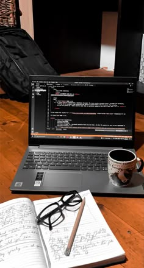

¡Hola! Soy Mirian, estudiante de Desarrollo de Aplicaciones Web (DAW). Vengo del mundo de las redes tras haber estudiado el Grado Medio de Telecomunicaciones, pero ahora mismo estoy totalmente enfocada en el desarrollo de software.
Me interesa sobre todo el desarrollo Frontend y el diseño de Páginas web,También me encanta aprender diferentes Lenguajes de programación.En las prácticas de primer curso, he hecho un curso de Frontend Developer y formación en gestión de bases de datos con MySQL Server.
También cuento con un nivel C1 de inglés (certificado por LanguageCert), una herramienta que considero clave para programar y buscar información técnica de forma eficiente.